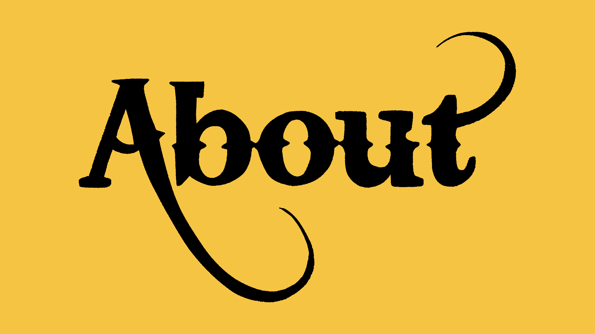

About us!
A page all about us!
Channel F is a reseller hailing from the far reaches of Los Angeles, California. Founded in 1973, Channel F is devoted to reselling and storing magical items and trinkets. 909-309-CHANNELF for inquiries.
DISCLAIMER: Channel F is merely a distributor, and our items do not reflect our company's ideals and actions. This includes and is not limited to; weapons of the S.W. (Shadow Wizard) war, artifacts related to the fall of The Peninsula, items sourced from the heart of Rotwood, etc. We are the middleman and have no control over the items sent in and shelved. We also condone the usage of these items, once an item is outside of Channel F, it belongs to the owner and any incident, purposeful or not, is the fault of the buyer. -M - B